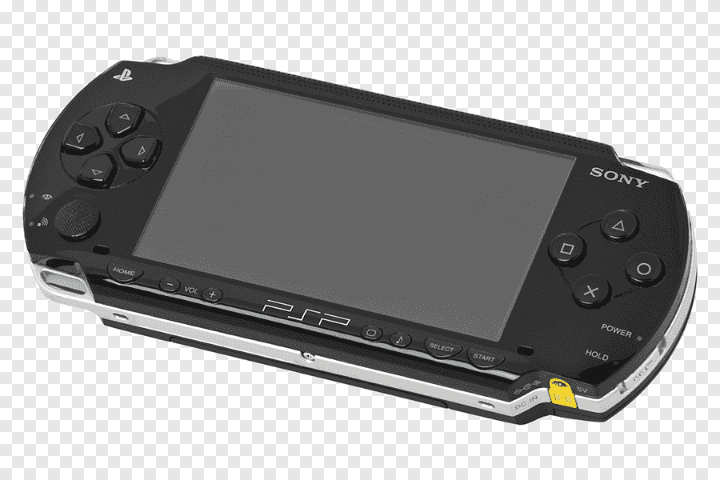

PlayStationPortable
The PlayStation Portable (PSP) is a handheld gaming console developed by Sony, released in 2004. It was notable for its powerful graphics capabilities, large widescreen display, and multimedia features, allowing users to play games, watch movies, listen to music, and browse the internet. The PSP had a rich library of games, including titles from popular franchises like Final Fantasy and God of War. It went through several iterations, including the PSP Slim & Lite and the PSP Go, which introduced a digital-only format. The PSP was well-received for its versatility and paved the way for future handheld gaming devices.